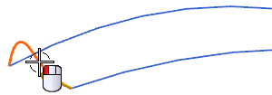
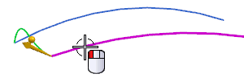
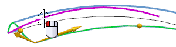
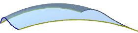

当光标位于片体上时，右击并选择隐藏。
点击曲面工具条上的扫掠 。
对于截面曲线，选择与上一个曲面相同的 S 形曲线。

单击两次鼠标中键以结束截面选择并前进至引导线组。
选择第一条引导线。

单击鼠标中键，或者点击添加新集 。
选择另一条引导线，然后单击鼠标中键。

在截面选项组中，确保缩放是设置为横向。
点击确定。
注意到这个片体与您创建的第一个片体迥然不同，它只在两条引导性之间进行缩放，而不是在其它方向。

如果您想要将它与您先前创建的曲面相比，可以先将其显示，然后再次隐藏。